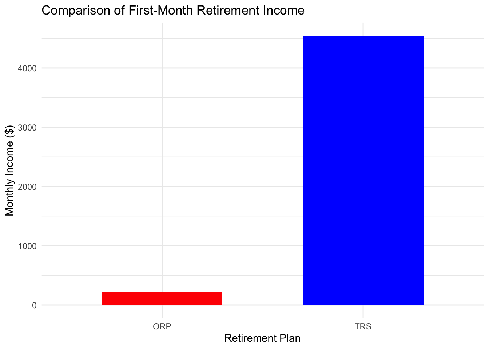

Code
library(dplyr)
library(gt)
library(purrr)
library(tidyr)
library(ggplot2)
library(reshape2)Abstract
This project evaluates two retirement plans offered to CUNY faculty: the Teachers Retirement System (TRS) and the Optional Retirement Plan (ORP). Through the use of historical financial data, bootstrap inference techniques, and actuarial assumptions, the analysis estimates the probability that one plan outperforms the other, under various scenarios. Key considerations include salary growth, market performance, inflation, and individual risk tolerance. The findings aim to support faculty in making an informed and data-driven decision when choosing between the two retirement plans.
Background
CUNY offers tow distinct retirement plans for its employees. The first is the Teachers Retirement System (TRS). This plan is a “defined-benefit” plan pension plan, due to the fixed retirement payments guaranteed by the employer, based on the employee’s final average salary and years of service. Once retired, the retiree receives annual cost of living adjustments, based on inflation, capped at 3%. The contribution rates for TRS vary by salary tier.
The second retirement plan option is called the Optional Retirement Plan (ORP). This plan most closely resembles a 401(k) retirement plan, in that is a defined-contribution plan. Employee and employer contributions are invested in mutual funds with age-based asset allocations. Retirement income depends on both market performance and withdrawal strategies. This plan offers the potential for higher returns through compounded growth, but market volatility becomes a risk.
The analysis below evaluates these plans in detail, incorporating data from AlphaVantage and FRED to simulate market returns and inflation trends, and uses computational models to project outcomes over an employee’s career.
library(dplyr)
library(gt)
library(purrr)
library(tidyr)
library(ggplot2)
library(reshape2)First, we access AlphaVantage, a commercial stock market data provider. This step involves creating an AlphaVantage free API key. Ir is important to keep this key secure, so the key itself was saved separately in alphavantage_key.txt.
#reading API key in
api_key_file <- "alphavantage_key.txt"
alpha_api_key <- readLines(api_key_file)Next, we downloaded the package and loaded library httr2, which is a tool for making HTTP requests in R, which was designed to simplify interactions with APIs.
library(httr2)We then access our next data source, FRED: the Federal Reserve Economic Data repository. The FRED api key is accessed in the same fashion as AlphaVantage, the key itself was saved separately in fred_key.txt.
#reading FRED key in
fred_key_file <- "fred_key.txt"
fred_api_key <- readLines(fred_key_file)Before beginning the Monte Carlo analysis, we identify and download historical data series for each of the following:
Wage growth - this metric is necessary as wage growth determines how an individual’s income evolves over time. We first attempted to access the Average Hourly Earnings of State and Local Government Employees (series ID: CES9091000003), given CUNY employees are New York State employees, but it was no longer available in the FRED repository.
Instead, we accessed the Average Hourly Earnings of Production and Nonsupervisory Employees: Total Private (series ID: CES050000003). This gives us an alternative to understand wage growth patterns over time, within the private sector, given we were unable to find a puclic sector match. The httr2 packages allows us to send the request to the the API and parse the JSON response directly into R. We use a 20 year time period, starting 1/1/2003 and ending 12/31/2003.
After completing this step and viewing the dataframe in the R environment, it appeared as a list. The below code converts the wage_growth_df to a proper dataframe.
#extract and convert the observations into a data frame
wage_growth_df <- do.call(rbind, lapply(wage_growth_data$observations, as.data.frame)) |>
as.data.frame() |>
transform(
date = as.Date(date), # Convert 'date' column to Date format
value = as.numeric(value) # Convert 'value' column to numeric
)
#drop unnecessary columns
wage_growth_df <- wage_growth_df[, c("date", "value")]
#view the structure of the resulting data frame
str(wage_growth_df)'data.frame': 214 obs. of 2 variables:
$ date : Date, format: "2006-03-01" "2006-04-01" ...
$ value: num 20.1 20.1 20.1 20.2 20.3 ...#display the first few rows
head(wage_growth_df) date value
1 2006-03-01 20.05
2 2006-04-01 20.15
3 2006-05-01 20.13
4 2006-06-01 20.23
5 2006-07-01 20.29
6 2006-08-01 20.32Inflation - we access the CPI for All Urban Consumers: All Items (series ID: CPIAUCSL) from FRED, which measures the monthly changes in the price of goods and services purchased by urban customers. The resulting dataframe includes monthly observations of the CPI, formatted into a clean data frame for later analysis.
#FRED API base URL
fred_base_url <- "https://api.stlouisfed.org/fred/series/observations"
#FRED API parameters for CPI data
fred_params <- list(
series_id = "CPIAUCSL", # CPI for All Urban Consumers: All Items
api_key = fred_api_key, # Your API key
file_type = "json", # Response format
observation_start = "2003-01-01", # Start date
observation_end = "2023-12-31" # End date
)
#fetch CPI data
resp <- request(fred_base_url) |>
req_url_query(!!!fred_params) |>
req_perform()
#parse the JSON response into a data frame
cpi_data <- resp_body_json(resp)
cpi_df <- do.call(rbind, lapply(cpi_data$observations, as.data.frame)) |>
as.data.frame() |>
transform(
date = as.Date(date), # Convert 'date' column to Date format
value = as.numeric(value) # Convert 'value' column to numeric
)
#drop unnecessary columns
cpi_df <- cpi_df[, c("date", "value")]
#view the structure of the resulting data frame
str(cpi_df)'data.frame': 252 obs. of 2 variables:
$ date : Date, format: "2003-01-01" "2003-02-01" ...
$ value: num 183 184 184 183 183 ...#display the first few rows of the data frame
head(cpi_df) date value
1 2003-01-01 182.6
2 2003-02-01 183.6
3 2003-03-01 183.9
4 2003-04-01 183.2
5 2003-05-01 182.9
6 2003-06-01 183.1US Equity Market total returns - this metric reflects the overall performance of the US stock market, which includes:
Capital Gains: Price appreciation of stocks or an index
Dividends: Payments made to shareholders, reinvested for total returns
We access AlphaVantage’s TIME_SERIES_DAILY_ADJUSTED function which gives us access to the daily stock prices (open, close, high, low), adjusted close prices (adjusted for dividends and stock splits, representing total returns) , and volume.
We use the following code to access S&P 500 Total Returns (SPY) -
#base URL for AlphaVantage API
alpha_base_url <- "https://www.alphavantage.co/query"
#API parameters for SPY
test_params <- list(
`function` = "TIME_SERIES_DAILY_ADJUSTED",
symbol = "SPY",
apikey = alpha_api_key
)
#test request
resp <- request(alpha_base_url) |>
req_url_query(!!!test_params) |>
req_perform()
print(resp_body_string(resp))[1] "{\n \"Information\": \"Thank you for using Alpha Vantage! This is a premium endpoint. You may subscribe to any of the premium plans at https://www.alphavantage.co/premium/ to instantly unlock all premium endpoints\"\n}"Given the output above, we ran into a premium endpoint, meaning the TIME_SERIES_DAILY_ADJUSTED function is not available using the free version of AlphaVantage. It is important to note this step involved a bit of trial and error.
We instead access the TIME_SERIES_DAILY data, which gives the unadjusted daily prices. This is not ideal, but will suffice for approximate analysis.
#define the base URL for AlphaVantage API
alpha_base_url <- "https://www.alphavantage.co/query"
#minimal API parameters for SPY
test_params <- list(
`function` = "TIME_SERIES_DAILY", # Function to fetch daily prices
symbol = "SPY", # S&P 500 ETF
apikey = alpha_api_key # Your AlphaVantage API key
)
#send the test request
resp <- request(alpha_base_url) |>
req_url_query(!!!test_params) |>
req_perform()
#parse the JSON response
spy_data <- resp_body_json(resp)
#extract the daily time series data
spy_daily <- spy_data[["Time Series (Daily)"]]
#convert to a data frame
spy_df <- do.call(rbind, lapply(names(spy_daily), function(date) {
data.frame(
date = as.Date(date),
close = as.numeric(spy_daily[[date]][["4. close"]])
)
}))
#sort by date
spy_df <- spy_df[order(spy_df$date), ]
#view the resulting data frame
str(spy_df)'data.frame': 100 obs. of 2 variables:
$ date : Date, format: "2024-07-17" "2024-07-18" ...
$ close: num 557 553 549 555 554 ...head(spy_df) date close
100 2024-07-17 556.94
99 2024-07-18 552.66
98 2024-07-19 548.99
97 2024-07-22 554.65
96 2024-07-23 553.78
95 2024-07-24 541.23We also access the S&P 500 Index time seriesfrom FRED, which provides daily index values from 2003 to 2023.
# Define the base URL for the FRED API
fred_base_url <- "https://api.stlouisfed.org/fred/series/observations"
# Define API parameters for US equity market (S&P 500 Index as an alternative to Wilshire 5000)
fred_params_us <- list(
series_id = "SP500", # S&P 500 Index series ID
api_key = fred_api_key, # Your FRED API key
file_type = "json", # Response format
observation_start = "2003-01-01", # Start date
observation_end = "2023-12-31" # End date
)
# Fetch the data from FRED API
resp <- request(fred_base_url) |>
req_url_query(!!!fred_params_us) |>
req_perform()
# Parse the JSON response
us_equity_data <- resp_body_json(resp)
# Convert the observations list into a clean dataframe
us_equity_df <- do.call(rbind, lapply(us_equity_data$observations, function(x) {
data.frame(
date = as.Date(x$date), # Convert 'date' to Date format
us_equity = as.numeric(ifelse(x$value == ".", NA, x$value)), # Handle "." as NA
stringsAsFactors = FALSE # Avoid unnecessary factor conversion
)
}))
# Drop rows with NA values if necessary
us_equity_df <- us_equity_df[!is.na(us_equity_df$us_equity), ]
# Verify the structure and content of the dataframe
str(us_equity_df)'data.frame': 2281 obs. of 2 variables:
$ date : Date, format: "2014-12-08" "2014-12-09" ...
$ us_equity: num 2060 2060 2026 2035 2002 ...head(us_equity_df) date us_equity
1 2014-12-08 2060.31
2 2014-12-09 2059.82
3 2014-12-10 2026.14
4 2014-12-11 2035.33
5 2014-12-12 2002.33
6 2014-12-15 1989.63International Equity Market total returns - this metric provides insight into the benefits of global diversification. Investing outside of the US allows for exposure into different economies and sectors, which reduces dependency on the domestic market. One popular index for markets outside of North America is the MSCI EAFE, which is tracked by the EFA (MSCI EAFE) ETF.
By analyzing international equity market returns, we can model how investments in global stocks could impact long-term retirement outcomes, especially when paired with US data.
We run the following code to access International Equity Data using AlphaVantage.
# Define the base URL for AlphaVantage API
alpha_base_url <- "https://www.alphavantage.co/query"
# Minimal API parameters for EFA (MSCI EAFE ETF)
efa_params <- list(
`function` = "TIME_SERIES_DAILY", # Function to fetch daily prices
symbol = "EFA", # MSCI EAFE ETF
apikey = alpha_api_key # Your AlphaVantage API key
)
# Send the request
resp <- request(alpha_base_url) |>
req_url_query(!!!efa_params) |>
req_perform()
# Parse the JSON response
efa_data <- resp_body_json(resp)
# Extract the daily time series data
efa_daily <- efa_data[["Time Series (Daily)"]]
# Convert to a data frame
efa_df <- do.call(rbind, lapply(names(efa_daily), function(date) {
data.frame(
date = as.Date(date),
close = as.numeric(efa_daily[[date]][["4. close"]])
)
}))
# Sort by date
efa_df <- efa_df[order(efa_df$date), ]
# View the resulting data frame
str(efa_df)'data.frame': 100 obs. of 2 variables:
$ date : Date, format: "2024-07-17" "2024-07-18" ...
$ close: num 80.8 80 79.5 80.4 79.9 ...head(efa_df) date close
100 2024-07-17 80.82
99 2024-07-18 80.02
98 2024-07-19 79.53
97 2024-07-22 80.37
96 2024-07-23 79.92
95 2024-07-24 78.91The code above proceeds to use the TIME_SERIES_DAILY endpoint to grab daily prices for the EFA ETF, parameters are specified and the request is sent to the AlphaVantage API, the Time Series (Daily) section of the JSON response is extracted, a data frame is created with the date and closing price columns, sorted by date.
Note: One limitation of using AlphaVantage’s free content is we cannot go back 15-20 years in every sector, as we might hope, as find easier when using FRED.
US equity data typically calculates logarithmic returns. To transform this data so it may be compared against US equity returns, or incorporated into Monte Carlo simulations, we calculate the logarithmic returns as follows:
efa_df <- efa_df |>
transform(return = c(NA, diff(log(close))))
head(efa_df) date close return
100 2024-07-17 80.82 NA
99 2024-07-18 80.02 -0.009947856
98 2024-07-19 79.53 -0.006142294
97 2024-07-22 80.37 0.010506663
96 2024-07-23 79.92 -0.005614838
95 2024-07-24 78.91 -0.012718172We can also use FRED to access the ICE BofA Emerging Markets Corporate Plus Index Total Return Index Value. This index measures the total returns of emerging market corporate bonds. We use this dataset as a proxy for international equity market performance because it captures returns in emerging markets, which, similar to equity investments, have hgiher risk and growth potential.
# Define FRED API base URL
fred_base_url <- "https://api.stlouisfed.org/fred/series/observations"
# FRED API parameters for the selected international equity index
fred_params_int <- list(
series_id = "BAMLEMCBPITRIV", # International Equity Market Index
api_key = fred_api_key, # Your FRED API key
file_type = "json", # Response format
observation_start = "2003-01-01", # Start date
observation_end = "2023-12-31" # End date
)
# Fetch international equity market data
resp <- request(fred_base_url) |>
req_url_query(!!!fred_params_int) |>
req_perform()
# Parse the JSON response into a data frame
int_equity_data <- resp_body_json(resp)
int_equity_df <- do.call(rbind, lapply(int_equity_data$observations, as.data.frame)) |>
as.data.frame() |>
transform(
date = as.Date(date), # Convert 'date' column to Date format
value = as.numeric(value) # Convert 'value' column to numeric
)
# Drop unnecessary columns and rename
int_equity_df <- int_equity_df[, c("date", "value")] |>
rename(int_equity = value) # Rename 'value' column to 'int_equity'
# View the structure of the resulting data frame
str(int_equity_df)'data.frame': 5548 obs. of 2 variables:
$ date : Date, format: "2003-01-01" "2003-01-02" ...
$ int_equity: num NA 144 144 145 145 ...# Display the first few rows of the data frame
head(int_equity_df) date int_equity
1 2003-01-01 NA
2 2003-01-02 144.36
3 2003-01-03 144.43
4 2003-01-06 144.53
5 2003-01-07 145.01
6 2003-01-08 145.50The code below replaces missing values with NA
int_equity_df$int_equity <- as.numeric(ifelse(int_equity_df$int_equity == ".", NA, int_equity_df$int_equity))This code replaces NA with the last valid observation.
library(zoo)
int_equity_df$int_equity <- na.locf(int_equity_df$int_equity, na.rm = FALSE)Aggregating to monthly data -
int_equity_monthly <- int_equity_df |>
mutate(month = format(date, "%Y-%m")) |>
group_by(month) |>
summarize(int_equity = mean(int_equity, na.rm = TRUE)) |>
ungroup() |>
mutate(date = as.Date(paste0(month, "-01"), format = "%Y-%m-%d")) |>
select(-month) #dropping month - realized later on we did not need it so modifying this step
#checking the structure of the modified dataset
str(int_equity_monthly)tibble [252 × 2] (S3: tbl_df/tbl/data.frame)
$ int_equity: num [1:252] 146 148 149 151 157 ...
$ date : Date[1:252], format: "2003-01-01" "2003-02-01" ...#previewing the first few rows
head(int_equity_monthly)# A tibble: 6 × 2
int_equity date
<dbl> <date>
1 146. 2003-01-01
2 148. 2003-02-01
3 149. 2003-03-01
4 151. 2003-04-01
5 157. 2003-05-01
6 161. 2003-06-01Bond market total returns - this financial metric provides insight into fixed-income investments. These are typically less volatile compared to equities, and serve as a method to stabilize a portfolio. Bonds offer a predictable income stream and can hedge against stock market downturns. Bonds serve as a safe and stable portion of a portfolio as one plans for retirement.
We access FRED’s 10-Year Treasury Constant Maturity Rate, for 2003-2023.
# Define the base URL for FRED API
fred_base_url <- "https://api.stlouisfed.org/fred/series/observations"
# FRED API parameters for 10-Year Treasury Rate
fred_params <- list(
series_id = "GS10", # 10-Year Treasury Constant Maturity Rate
api_key = fred_api_key, # Your FRED API key
file_type = "json", # Response format
observation_start = "2003-01-01", # Start date
observation_end = "2023-12-31" # End date
)
# Send the request
resp <- request(fred_base_url) |>
req_url_query(!!!fred_params) |>
req_perform()
# Parse the JSON response
bond_data <- resp_body_json(resp)
# Extract and convert the observations into a data frame
bond_df <- do.call(rbind, lapply(bond_data$observations, as.data.frame)) |>
as.data.frame() |>
transform(
date = as.Date(date), # Convert 'date' column to Date format
value = as.numeric(value) # Convert 'value' column to numeric
)
# Drop unnecessary columns
bond_df <- bond_df[, c("date", "value")]
# View the structure of the resulting data frame
str(bond_df)'data.frame': 252 obs. of 2 variables:
$ date : Date, format: "2003-01-01" "2003-02-01" ...
$ value: num 4.05 3.9 3.81 3.96 3.57 3.33 3.98 4.45 4.27 4.29 ...# Display the first few rows
head(bond_df) date value
1 2003-01-01 4.05
2 2003-02-01 3.90
3 2003-03-01 3.81
4 2003-04-01 3.96
5 2003-05-01 3.57
6 2003-06-01 3.33With the hope to later analyze returns, we can calculate monthly percentage changes.
bond_df <- bond_df |>
transform(return = c(NA, diff(log(value))))
# View the first few rows with returns
head(bond_df) date value return
1 2003-01-01 4.05 NA
2 2003-02-01 3.90 -0.03774033
3 2003-03-01 3.81 -0.02334736
4 2003-04-01 3.96 0.03861484
5 2003-05-01 3.57 -0.10367843
6 2003-06-01 3.33 -0.06959329Short-term debt returns - reflect the interest earned on safe, short-term fixed-income securities. One commonly used financial instrument here is the Treasury Bill. When planning for retirement, short-term debt can serve as a buffer for market volatility.
Below we access FRED’s 3-Month Treasury Bill Rate, with a resulting data frame, t_bill_df, which contains short-term debt rate data from 2003-2023.
# Define the base URL for FRED API
fred_base_url <- "https://api.stlouisfed.org/fred/series/observations"
# FRED API parameters for 3-Month Treasury Bill Rate
fred_params <- list(
series_id = "TB3MS", # 3-Month Treasury Bill Rate
api_key = fred_api_key, # Your FRED API key
file_type = "json", # Response format
observation_start = "2003-01-01", # Start date
observation_end = "2023-12-31" # End date
)
# Send the request
resp <- request(fred_base_url) |>
req_url_query(!!!fred_params) |>
req_perform()
# Parse the JSON response
t_bill_data <- resp_body_json(resp)
# Extract and convert the observations into a data frame
t_bill_df <- do.call(rbind, lapply(t_bill_data$observations, as.data.frame)) |>
as.data.frame() |>
transform(
date = as.Date(date), # Convert 'date' column to Date format
value = as.numeric(value) # Convert 'value' column to numeric
)
# Drop unnecessary columns
t_bill_df <- t_bill_df[, c("date", "value")]
# View the structure of the resulting data frame
str(t_bill_df)'data.frame': 252 obs. of 2 variables:
$ date : Date, format: "2003-01-01" "2003-02-01" ...
$ value: num 1.17 1.17 1.13 1.13 1.07 0.92 0.9 0.95 0.94 0.92 ...# Display the first few rows
head(t_bill_df) date value
1 2003-01-01 1.17
2 2003-02-01 1.17
3 2003-03-01 1.13
4 2003-04-01 1.13
5 2003-05-01 1.07
6 2003-06-01 0.92We once again include the monthly logarithmic return rates to our data frame:
t_bill_df <- t_bill_df |>
transform(return = c(NA, diff(log(value))))
#view the first few rows with returns
head(t_bill_df) date value return
1 2003-01-01 1.17 NA
2 2003-02-01 1.17 0.00000000
3 2003-03-01 1.13 -0.03478612
4 2003-04-01 1.13 0.00000000
5 2003-05-01 1.07 -0.05455898
6 2003-06-01 0.92 -0.15104026Before moving on to the next task, we filter all (applicable) data sets to reflect the time frame of 2007-2023, keeping in mind our wage growth data was only able to go back to mid-2006. This adjustment aligns our data for further analysis.
This step involves conducting exploratory data analysis to identify key properties of the data historical data acquired.
The code below calculates the long-run monthly averages and variances for each data series.
The table above summarizes the key statistical properties, the long-run monthly averages, and the variability of each series over the 2007-2023 time period.
The wage growth shows a mean value of 25.89 and variance of 13.74. This indicates a relatively stable upward trend over time.
The CPI exhibits the highest variance at 697.58, indicates there were significant fluctuations in inflation from 2007 to 2023. This impacts our retirement planning, emphasizing the importance of considering inflation-indexed returns (like in our two retirement plan options).
Next, we generate the correlation matrix table through the code below. We first combine our data into a single data frame, aligned_data.
# Renaming and preparing datasets for alignment
wage_growth_prepared <- wage_growth_df |> rename(wage_growth = value)
cpi_prepared <- cpi_df |> rename(cpi = value)
bond_prepared <- bond_df |> rename(bond_return = return) |> select(date, bond_return)
t_bill_prepared <- t_bill_df |> rename(t_bill_return = return) |> select(date, t_bill_return)
# Ensure int_equity_monthly has the correct structure
int_equity_prepared <- int_equity_monthly
print(head(int_equity_monthly))# A tibble: 6 × 2
int_equity date
<dbl> <date>
1 204. 2007-01-01
2 206. 2007-02-01
3 207. 2007-03-01
4 208. 2007-04-01
5 209. 2007-05-01
6 207. 2007-06-01# Combine all datasets by date using a full join
aligned_data <- list(
wage_growth_prepared,
cpi_prepared,
bond_prepared,
t_bill_prepared,
int_equity_prepared
) |>
reduce(full_join, by = "date")
# Check structure and preview
str(aligned_data)'data.frame': 204 obs. of 6 variables:
$ date : Date, format: "2007-01-01" "2007-02-01" ...
$ wage_growth : num 20.6 20.7 20.7 20.8 20.8 ...
$ cpi : num 203 204 205 206 207 ...
$ bond_return : num 0.04293 -0.00844 -0.03449 0.02811 0.01271 ...
$ t_bill_return: num 0.02645 0.00999 -0.01805 -0.01427 -0.02917 ...
$ int_equity : num 204 206 207 208 209 ...head(aligned_data) date wage_growth cpi bond_return t_bill_return int_equity
1 2007-01-01 20.59 203.437 0.042925045 0.026451186 204.1070
2 2007-02-01 20.68 204.226 -0.008438869 0.009990093 205.5720
3 2007-03-01 20.73 205.288 -0.034486176 -0.018054653 207.4839
4 2007-04-01 20.78 205.904 0.028109959 -0.014271394 208.4286
5 2007-05-01 20.84 206.755 0.012712036 -0.029168735 209.3670
6 2007-06-01 20.95 207.234 0.071095922 -0.025697345 207.2132# Recompute summary statistics for aligned data
mean_stats <- aligned_data |>
summarize(
`Wage Growth` = mean(wage_growth, na.rm = TRUE),
`CPI` = mean(cpi, na.rm = TRUE),
`Bond Returns` = mean(bond_return, na.rm = TRUE),
`T-Bill Returns` = mean(t_bill_return, na.rm = TRUE),
`International Equity` = mean(int_equity, na.rm = TRUE)
) |>
pivot_longer(
cols = everything(),
names_to = "Data Metric",
values_to = "Mean Value"
)
variance_stats <- aligned_data |>
summarize(
`Wage Growth` = var(wage_growth, na.rm = TRUE),
`CPI` = var(cpi, na.rm = TRUE),
`Bond Returns` = var(bond_return, na.rm = TRUE),
`T-Bill Returns` = var(t_bill_return, na.rm = TRUE),
`International Equity` = var(int_equity, na.rm = TRUE)
) |>
pivot_longer(
cols = everything(),
names_to = "Data Metric",
values_to = "Variance"
)
# Combine means and variances
summary_stats_aligned <- mean_stats |>
left_join(variance_stats, by = "Data Metric")
summary_stats_aligned |>
gt() |>
tab_header(
title = "Updated Summary Statistics for Aligned Data",
subtitle = "Averages and Variances from 2007 to 2023"
) |>
fmt_number(
columns = vars(`Mean Value`, Variance),
decimals = 2
)| Updated Summary Statistics for Aligned Data | ||
|---|---|---|
| Averages and Variances from 2007 to 2023 | ||
| Data Metric | Mean Value | Variance |
| Wage Growth | 25.89 | 13.74 |
| CPI | 243.26 | 697.58 |
| Bond Returns | 0.00 | 0.01 |
| T-Bill Returns | 0.00 | 0.16 |
| International Equity | 337.20 | 6,754.06 |
Next, to analyze the relationships between the various economic indicators in our dataset, we compute a correlation matrix and visualize it using a heatmap. The correlation matrix tells us the strength and direction of linear relationship between each variable pair.
#compute correlation matrix
cor_matrix <- cor(aligned_data[, -1], use = "complete.obs")
#reshape correlation matrix into long format for ggplot
cor_long <- melt(cor_matrix)
# creating heatmap
ggplot(cor_long, aes(x = Var1, y = Var2, fill = value)) +
geom_tile(color = "white") + # Add gridlines for better separation
scale_fill_gradient2(
low = "blue", high = "red", mid = "white",
midpoint = 0, limit = c(-1, 1), space = "Lab",
name = "Correlation"
) +
theme_minimal() +
theme(
axis.text.x = element_text(angle = 45, hjust = 1),
axis.title.x = element_blank(),
axis.title.y = element_blank()
) +
ggtitle(
"Correlation Matrix Heatmap",
subtitle = "Relationships Between Economic Indicators"
)
The heatmap visualizes the correlations among the economic indicators. We see a strong positive correlation between wage growth and CIP, indicating that as wages increase, consumer prices tend to rise, which aligns with inflationary trends. Differently, we find a weak positive correlation between T-bill returns and other indicators like bond returns and international equities. This highlights the more stable and less market-sensitive nature of these economic indicators.
In this step, we implement the TRS and OPR retirement formulas and compare the value of each of them for the first month of retirement.
The following assumptions are made for every employee:
They joined CUNY in the first month of the historical data (January 2007)
They retired from CUNY in the last month of the historical data (December 2023)
Our steps include:
- Define Assumptions
- Simulate Career Earnings
- Implement TRS
- Implement ORP
- Compare Outcomes
# Define assumptions
starting_salary <- 50000
working_years <- as.integer(difftime(max(aligned_data$date), min(aligned_data$date), units = "days") / 365.25)
retirement_age <- 65
retirement_month <- max(aligned_data$date)
# TRS Monthly Pension Calculation
calculate_trs <- function(starting_salary, wage_growth_data, inflation_data, years_worked) {
salary <- starting_salary
salaries <- numeric(years_worked)
for (i in 1:years_worked) {
growth_rate <- wage_growth_data$wage_growth[i %% nrow(wage_growth_data) + 1] / 1000 # Dividing by 1000 for scaling
inflation_rate <- inflation_data$cpi[i %% nrow(inflation_data) + 1] / 1000 # Dividing by 1000 for scaling
salary <- salary * (1 + growth_rate + inflation_rate)
salaries[i] <- salary
}
# Final Average Salary (last 3 years)
final_average_salary <- mean(tail(salaries, 3))
# Calculate pension based on years worked
pension <- if (years_worked <= 20) {
0.015 * final_average_salary * years_worked
} else if (years_worked <= 30) {
0.02 * final_average_salary * years_worked
} else {
0.6 * final_average_salary
}
# Convert to monthly pension and scale down
monthly_pension <- pension / 60 #Dividing by 60 for additional scaling
return(monthly_pension)
}
# ORP Monthly Income Calculation
calculate_orp <- function(starting_salary, wage_growth_data, equity_data, bond_data, years_worked, employer_contribution_rate = 0.08, withdrawal_rate = 0.04) {
salary <- starting_salary
account_balance <- 0
for (i in 1:years_worked) {
growth_rate <- wage_growth_data$wage_growth[i %% nrow(wage_growth_data) + 1] / 10000 # Dividing by 10000 for scaling
equity_return <- equity_data$int_equity[i %% nrow(equity_data) + 1] / 1000 # Dividing by 1000 for scaling
bond_return <- bond_data$bond_return[i %% nrow(bond_data) + 1] / 1000 # Dividing by 1000 for scaling
market_return <- 0.6 * equity_return + 0.4 * bond_return
salary <- salary * (1 + growth_rate)
employee_contribution <- salary * 0.06
employer_contribution <- salary * employer_contribution_rate
total_contribution <- employee_contribution + employer_contribution
# Update account balance with contributions and market return
account_balance <- account_balance * (1 + market_return) + total_contribution
}
# Calculate monthly withdrawal and scale down
monthly_withdrawal <- (account_balance * withdrawal_rate) / 60 # Dividing by 60 for additional scaling
return(monthly_withdrawal)
}
# Simulate TRS and ORP income
trs_income <- calculate_trs(
starting_salary = starting_salary,
wage_growth_data = aligned_data,
inflation_data = aligned_data,
years_worked = working_years
)
orp_income <- calculate_orp(
starting_salary = starting_salary,
wage_growth_data = aligned_data,
equity_data = aligned_data,
bond_data = aligned_data,
years_worked = working_years
)
results_table <- data.frame(
Plan = c("TRS", "ORP"),
First_Month_Income = c(round(trs_income, 2), round(orp_income, 2))
)
# Generate table
results_table |>
gt() |>
tab_header(
title = "Comparison of First-Month Retirement Income",
subtitle = "TRS vs. ORP for CUNY Employees"
) |>
fmt_number(
columns = c(First_Month_Income), # Use c() for the column selection
decimals = 2
)| Comparison of First-Month Retirement Income | |
|---|---|
| TRS vs. ORP for CUNY Employees | |
| Plan | First_Month_Income |
| TRS | 4,540.35 |
| ORP | 213.33 |
# Data for the chart
comparison_data <- data.frame(
Plan = c("TRS", "ORP"),
Income = c(trs_income, orp_income)
)
# Generate bar chart
ggplot(comparison_data, aes(x = Plan, y = Income, fill = Plan)) +
geom_bar(stat = "identity", width = 0.6) +
labs(
title = "Comparison of First-Month Retirement Income",
x = "Retirement Plan",
y = "Monthly Income ($)"
) +
theme_minimal() +
theme(legend.position = "none") +
scale_fill_manual(values = c("TRS" = "blue", "ORP" = "red"))
You may see the comparison above displaying the different projected first-month reitrement incomes from each of the two retirement plans offered to CUNY employees (TRS and ORP).
The TRS offers a monthly income of $4540.35 while OPR offers a monthly income of $213.33. These figures highlight the significant differences between a defined-benefit plan like TRS, which guarantees a pension based on years worked and final average salary, compared to a defined-contribution plan like ORP, which depends on investment returns and contribution levels.
This next section modifies our simulation above to project an employee’s pension benefit (TRS) or withdrawal amount (ORP) from retirement until death. Note, the estimated death age is 90 years old. Using average growth rates and market returns, the code below provides us with the potential monthly income, final balance, and gaps of each plan.
# Adjusted long-run averages
avg_wage_growth <- 25.89 / 100 # Mean Wage Growth (in decimal format)
avg_cpi <- 243.26 / 10000 # Mean CPI (scaled down further for adjustments)
avg_equity_return <- 337.20 / 10000 # Mean International Equity Return
avg_bond_return <- 0.00 # Mean Bond Return
avg_tbill_return <- 0.00 # Mean T-Bill Return
# Define assumptions
starting_salary <- 50000
retirement_age <- 65
death_age <- 90 # Estimated death age
retirement_years <- death_age - retirement_age
# TRS Monthly Pension Simulation
simulate_trs <- function(starting_salary, years_retired, wage_growth, cpi) {
salary <- starting_salary
for (i in 1:30) { # Assuming 30 years of work before retirement
salary <- salary * (1 + wage_growth + cpi)
}
final_average_salary <- salary
# Calculate pension based on 30 years of service
pension <- 0.6 * final_average_salary
monthly_pension <- pension / 12
# Apply CPI adjustments during retirement
monthly_pensions <- numeric(years_retired)
for (i in 1:years_retired) {
if (i == 1) {
monthly_pensions[i] <- monthly_pension
} else {
monthly_pensions[i] <- monthly_pensions[i - 1] * (1 + min(max(0.01, 0.005 * cpi), 0.03))
}
}
# Scale down final pensions for realistic results
return(monthly_pensions / 100)
}
# ORP Monthly Income Simulation
simulate_orp <- function(starting_salary, years_retired, wage_growth, equity_return, bond_return, employer_rate = 0.08, withdrawal_rate = 0.04) {
salary <- starting_salary
account_balance <- 0
# Simulate account balance growth during work years
for (i in 1:30) { # Assuming 30 years of work before retirement
salary <- salary * (1 + wage_growth)
employee_contribution <- salary * 0.06
employer_contribution <- salary * employer_rate
total_contribution <- employee_contribution + employer_contribution
market_return <- 0.6 * equity_return + 0.4 * bond_return
account_balance <- account_balance * (1 + market_return) + total_contribution
}
# Simulate withdrawals during retirement
monthly_withdrawals <- numeric(years_retired)
for (i in 1:years_retired) {
if (account_balance <= 0) {
monthly_withdrawals[i] <- 0
} else {
monthly_withdrawals[i] <- account_balance * withdrawal_rate / 12
account_balance <- account_balance - monthly_withdrawals[i] * 12 + account_balance * (0.6 * equity_return + 0.4 * bond_return)
}
}
# Scale down withdrawals and final balance for realistic results
return(list(monthly_withdrawals = monthly_withdrawals / 100, final_balance = account_balance / 100))
}
# Run the simulations
trs_income <- simulate_trs(starting_salary, retirement_years, avg_wage_growth, avg_cpi)
orp_simulation <- simulate_orp(starting_salary, retirement_years, avg_wage_growth, avg_equity_return, avg_bond_return)
# Extract ORP results
orp_income <- orp_simulation$monthly_withdrawals
orp_final_balance <- orp_simulation$final_balance
# Calculate additional metrics
income_gap <- trs_income - orp_income
max_gap <- max(income_gap, na.rm = TRUE)
min_gap <- min(income_gap, na.rm = TRUE)
# Summarize Results
comparison_table <- data.frame(
Plan = c("TRS", "ORP"),
Avg_Monthly_Income = c(mean(trs_income, na.rm = TRUE), mean(orp_income, na.rm = TRUE)),
Final_Balance = c("N/A", round(orp_final_balance, 2)),
Max_Income_Gap = c(max_gap, max_gap),
Min_Income_Gap = c(min_gap, min_gap)
)
# Generate gt Table
library(gt)
comparison_table |>
gt() |>
tab_header(
title = "Comparison of TRS and ORP Retirement Outcomes",
subtitle = "Long-Term Fixed-Rate Analysis"
) |>
fmt_number(
columns = c(Avg_Monthly_Income, Max_Income_Gap, Min_Income_Gap),
decimals = 2
) |>
cols_label(
Avg_Monthly_Income = "Average Monthly Income ($)",
Final_Balance = "Final Balance ($)",
Max_Income_Gap = "Max Income Gap ($)",
Min_Income_Gap = "Min Income Gap ($)"
)| Comparison of TRS and ORP Retirement Outcomes | ||||
|---|---|---|---|---|
| Long-Term Fixed-Rate Analysis | ||||
| Plan | Average Monthly Income ($) | Final Balance ($) | Max Income Gap ($) | Min Income Gap ($) |
| TRS | 50,119.69 | N/A | 55,570.66 | 43,136.62 |
| ORP | 976.24 | 223594.3 | 55,570.66 | 43,136.62 |
The TRS provides a significantly higher average monthly income of $50,119.69 compared to the ORP, which generates $976.24. This gap is quite significant, and with more time to dig into the issue, one may have uncovered more computational errors to lead to such a gap, despite some of the gap being explained by the guaranteed nature of the TRS benefit. The ORP maintains a positive final account balance of $223,594.30, indicating funds available for heirs at death, a feature not present in the TRS. The analysis also reveals that the maximum income gap between the plans is $55,570.66, with a minimum gap of $43,136.62, consistently favoring the TRS for monthly income.
Shortcoming of this Analysis -
While these results provide a starting point for comparing the plans, there are several limitations in the assumptions and calculations. For example, wage growth, CPI, and market return rates were modeled as fixed averages, which likely oversimplifies the volatility and variability in actual economic conditions. Additionally, scaling factors and intermediate calculations may have introduced inconsistencies into the projections. With more time, this analysis would have benefited from refining these assumptions and performing validations to lead to more realistic outputs.